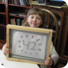

Hey everybody. Another week, another Mini Maker show! This time we make some t-shirts and little posters using super simple screen printing! I thought it was going to be harder, but after a little practice, I found it was fun and easy!
One problem might be that you need a lot of stuff to print on to make it worth spending the time on a screen, but if you want to make lots of shirts or valentines, it's a great idea!
Have fun with this one, and remember to get out there and make something!